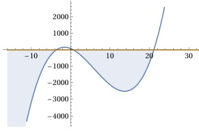

Aufgabe 59 Bestimmen Sie die Lösungsmenge der Ungleichung für x ∈ ℝ: (21 - x)(4x + 15)(0,25 - 0,375x) < 0 3 Lösungsmöglichkeiten: 1. (21 - x) > 0 (4x + 15)(0,25 - 0,375x) < 0 und umgekehrt 2. (4x + 15) > 0 (21 - x)(0,25 - 0,375x) < 0 und umgekehrt 3. (0,25 - 0,375x) > 0 (21 - x)(4x + 15) < 0 und umgekehrt 3. Möglichkeit gewählt. 0,25 - 0,375x > 0 |+0,375x 0,375x < 0,25 |:0,375 2 x < --- 3 (21 - x)(4x + 15) < 0, ist dann der Fall, wenn 1. 21 - x > 0 --> x < 21 4x + 15 < 0 --> x < -3,75 (21 - x)(4x + 15) < 0 trifft zu für x < 21 ∩ x x < -3,75 = x < -3,75 oder wenn 21 - x < 0 --> x > 21 4x + 15 > 0 --> x > -3,75 (21 - x)(4x + 15) < 0 trifft zu für x > 21 ∩ x > -3,75 = x > 21 und insgesamt für x < -3,75 ∪ x > 21 (21 - x)(4x + 15)(0,25 - 0,375x) < 0 trifft zu für 2 x < --- ∩ x < -3,75 ∩ x > 21 3 L1 = x < -3,75 2. 0,25 - 0,375x < 0 |+0,375x 0,375x > 0,25 |:0,375 2 x > --- = D5 3 (21 - x)(4x + 15) > 0, ist dann der Fall, wenn 21 - x > 0 --> x < 21 4x + 15 > 0 --> x > -3,75 (21 - x)(4x + 15) > 0 trifft zu für x < 21 ∩ x > -3,75 = -3,75 < x < 21 oder wenn 21 - x < 0 --> x > 21 4x + 15 < 0 --> x < -3,75 (21 - x)(4x + 15) > 0 trifft zu für x > 21 ∩ x < -3,75 = ∅ und insgesamt für -3,75 < x < 21 ∪ ∅ = -3,75 < x < 21 (21 - x)(4x + 15)(0,25 - 0,375x) < 0 trifft zu für 2 x > --- ∩ -3,75 < x < 21 3 2 L2 = --- < x < 21 3 L = L1 ∪ L2 2 L= x < -3,75 ∪ --- < x < 21 3 Alternativlösung: Nullstellen von (21 - x)(4x + 15)(0,25 - 0,375x) = 0 21 - x = 0|+x x1 = 21 4x + 15 = 0 |-15 4x = - 15 |:4 x2 = - 3,75 0,25 - 0,375x = 0|+0,375x 0,375x = 0,25 |:0,375 2 x3 = --- 3 Die Funktionswerte kleiner als - 3,75 und 2 zwischen --- und 21 liegen unterhalb der x-Achse, 3 erfüllen also die Bedingung (21 - x)(4x + 15)(0,25 - 0,375x) < 0. 2 L = x < -3,75 ∪ --- < x < 21 3
